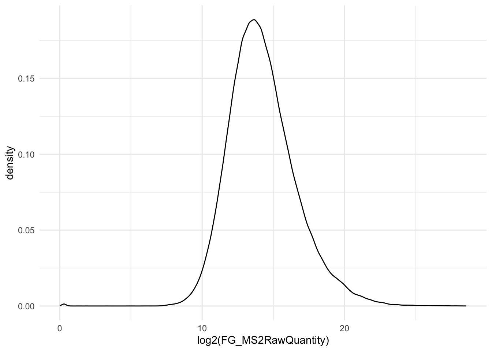
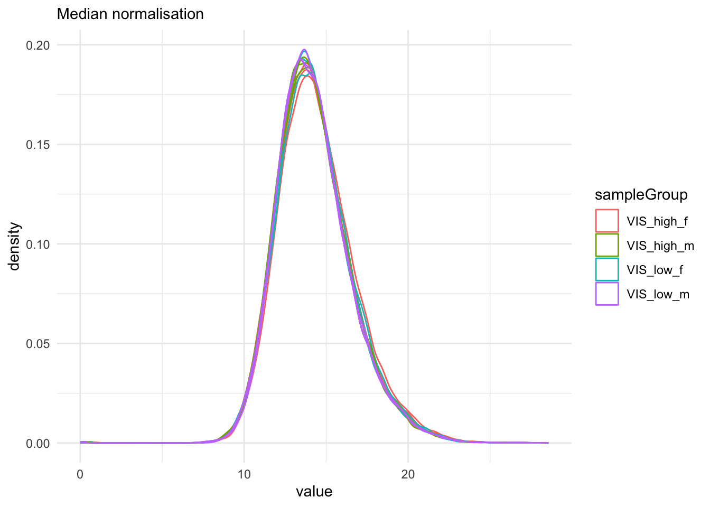
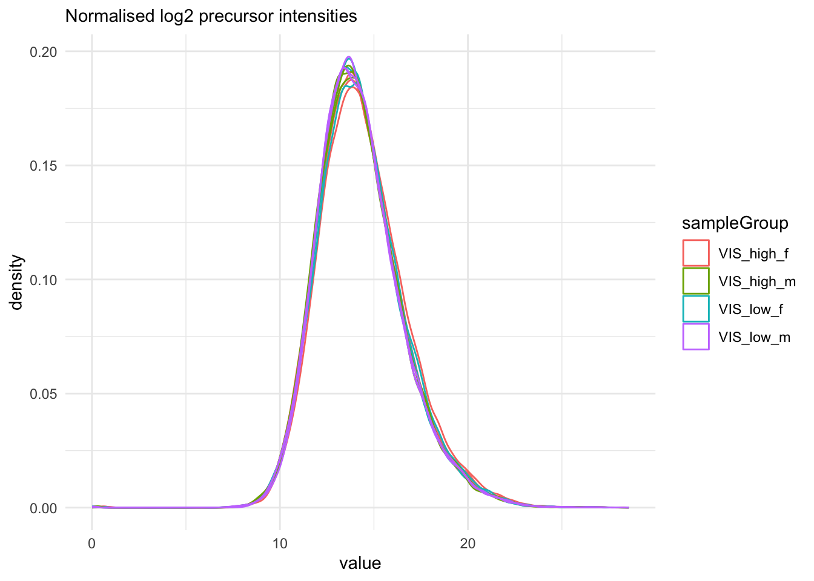
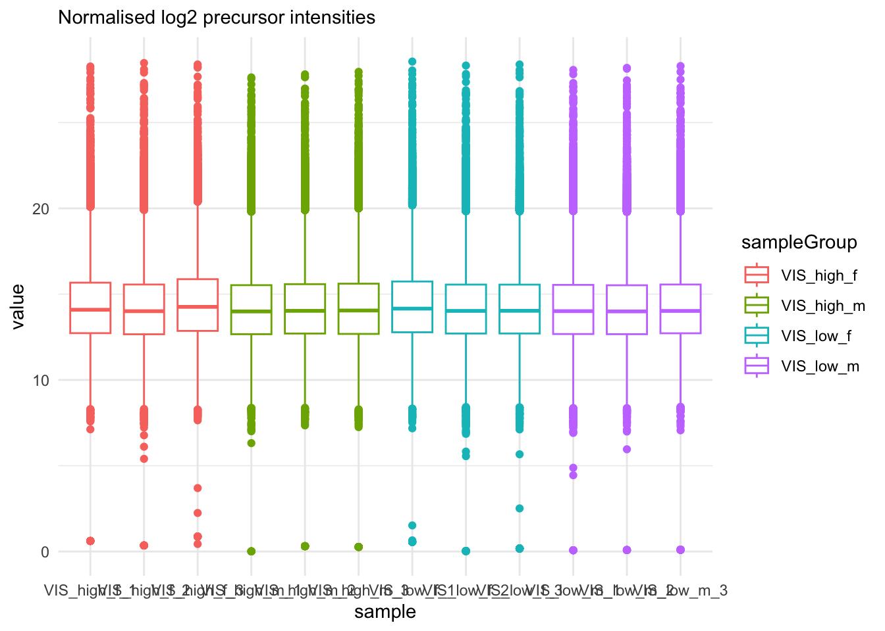
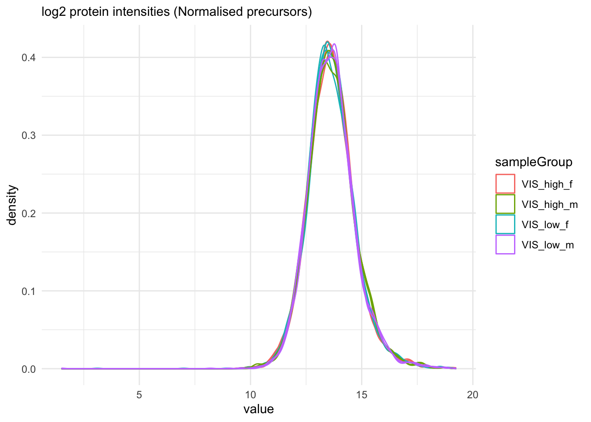
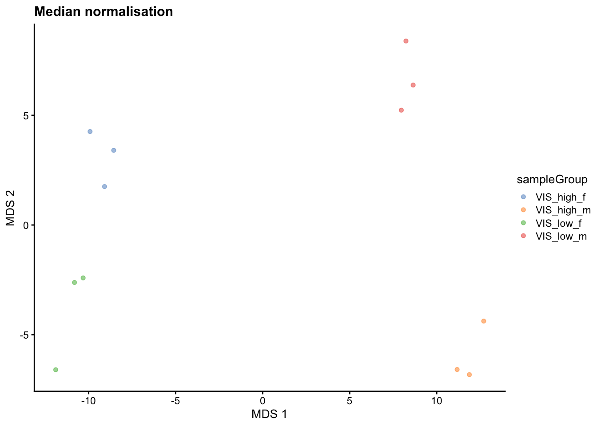

library("QFeatures")
library("dplyr")
library("tidyr")
library("ggplot2")
library("msqrob2")
library("stringr")
library("ExploreModelMatrix")
library("MsCoreUtils")
library("matrixStats")
library("patchwork")
library("kableExtra")
library("ComplexHeatmap")
library("purrr")
library("tibble")
library("scater")Mouse Diet - two factors
Lieven Clement ![]()
1 Background
With the PXD059421 data deposited on ProteomeXchange researchers study the molecular effects of dietary DINCH exposure, on the proteome, phosphoproteome and acetylome profiles of visceral (VIS) and subcutaneous (SC) adipose tissue in a model of diet-induced obesity in male and female C57BL/6N mice. This study includes data on visceral and subcutaneous adipose tissue of female and male mice that were either fed a standard plant-based diet (chow), a standard high-fat diet (HFD) or two HFD diets including doses of DINCH (4,500 ppm and 15,000 ppm). Three female and three male mice were used for each diet (Aldehoff et al. 2025).
The data were downloaded from Pride and reprocessed using spectronaut. Here, we will focus on the proteomics data from the visceral tissue of mice subjected to the low and high DINCH diet.
2 Load packages
We load the msqrob2 package, along with additional packages for data manipulation and visualisation.
3 Data
3.1 Precursor table
We load the output from Spectronaut parquet file. Can be file path to local file or url to file that lives on the web.
precursorFile = "https://github.com/statOmics/PDA-DIA/raw/refs/heads/main/data/mouseDiet-spectronaut.parquet"We can import the report.parquet file using the read_parquet function from the arrow package.
precursors <- arrow::read_parquet(precursorFile) # function from the arrow package
#precursors <- data.table::fread(precursorFile) # For older versions the results are stored as tsv files. Note, that by default the spectronaut output is stored as a tsv file. In that case a . occurs in the column variables instead of a “_” upon importing with fread.
Each row in the precursor data table is in “long format” and contains information about one precursor in a specific run (the table below shows the first 6 rows). The columns contains various descriptors about the precursor, such as its sequence, its charge, run, etc.
| R_FileName | EG_ModifiedSequence | PEP_StrippedSequence | FG_Charge | PG_ProteinGroups | PG_Genes | FG_MS2RawQuantity | FG_Quantity | EG_Qvalue | PG_Qvalue | PEP_IsProteotypic | EG_IsDecoy | EG_ApexRT | EG_IsImputed |
|---|---|---|---|---|---|---|---|---|---|---|---|---|---|
| 153_SC_FP_fHFD_1 | VLIPSYAAGSIIGK | VLIPSYAAGSIIGK | 2 | A0A1W2P872 | Nova2 | 4878.254 | 6511.023 | 0.0000000 | 0 | FALSE | FALSE | 47.14784 | FALSE |
| 153_SC_FP_fHFD_1 | TLQSLAC[Carbamidomethyl (C)]GK | TLQSLACGK | 2 | A2A432 | Cul4b | 6054.375 | 9646.727 | 0.0000006 | 0 | FALSE | FALSE | 23.00650 | FALSE |
| 153_SC_FP_fHFD_1 | DAFLVFR | DAFLVFR | 2 | A2A5R2 | Arfgef2 | 1600.934 | 2196.849 | 0.0022513 | 0 | FALSE | FALSE | 47.74006 | FALSE |
| 153_SC_FP_fHFD_1 | MLLIENLR | MLLIENLR | 2 | A2A863 | Itgb4 | 9364.659 | 12041.207 | 0.0000000 | 0 | TRUE | FALSE | 45.63564 | FALSE |
| 153_SC_FP_fHFD_1 | SQVSPQGLQVR | SQVSPQGLQVR | 2 | A2A863 | Itgb4 | 16982.832 | 27112.275 | 0.0007975 | 0 | TRUE | FALSE | 24.47148 | FALSE |
| 153_SC_FP_fHFD_1 | VLSTSSTLTR | VLSTSSTLTR | 2 | A2A863 | Itgb4 | 8142.862 | 12632.530 | 0.0012142 | 0 | TRUE | FALSE | 21.72404 | FALSE |
(Note, that by default the spectronaut output is stored as a tsv file. In that case a . occurs in the column variables instead of a “_” upon importing with fread.)
No precursor Id is present in the file. We can make that using the EG_ModifiedSequence and FG_Charge.
precursors <- precursors |>
mutate(EG_PrecursorId = paste0(EG_ModifiedSequence, FG_Charge))3.2 Subset for low and high diets
Subset the data from the male and female mice subjected to Low and High diets
precursors <- precursors |>
filter(grepl("VIS", R_FileName) &
(grepl("low",R_FileName) | grepl("high",R_FileName))
)precursors <- precursors |>
select(
R_FileName, #Run,
EG_PrecursorId,
EG_ModifiedSequence, #Modified.Sequence,
PEP_StrippedSequence, #Stripped.Sequence,
FG_Charge, #PrecursoR_Charge,
PG_ProteinGroups, #Protein.Group,
PG_Genes, #Genes,
FG_MS2RawQuantity, #PrecursoR_Quantity,
EG_Qvalue, #Q.Value,
#No spectronaut counterpart #Lib.Q.Value,
PG_Qvalue, # PG_Q.Value,
#No spectronaut counterpart #Lib.PG_Q.Value
PEP_IsProteotypic, #Proteotypic,
EG_IsDecoy, #Decoy,
EG_ApexRT,#RT
EG_IsImputed)Quick check on distribution of precursors MS2 intensities.
precursors |>
ggplot(aes(x = log2(FG_MS2RawQuantity))) +
geom_density() +
theme_minimal()
Seems no imputation has been done.
3.3 Sample annotation table
The sample annotation table) is not available and can be generated from the run labels, as the researchers included information on the design in the filenames.
annot <- precursors |>
dplyr::distinct(R_FileName) |>
separate(R_FileName, into = c('f1','tissue','f2','diet','rep'), sep = '_', remove=FALSE) |>
mutate(runCol=R_FileName,
sex = stringr::str_sub(diet,1,1),
diet = stringr::str_sub(diet,2),
rep = paste(diet, sex, rep, sep='_'),
sampleGroup = paste(tissue,diet,sex,sep='_'),
sampleId = paste(tissue,rep, sep="_")) |>
dplyr::select(-c(R_FileName,f1,f2)) |>
relocate("runCol")
annot runCol tissue diet rep sex sampleGroup sampleId
1 153_VIS_FP_fhigh_1 VIS high high_f_1 f VIS_high_f VIS_high_f_1
2 153_VIS_FP_fhigh_2 VIS high high_f_2 f VIS_high_f VIS_high_f_2
3 153_VIS_FP_fhigh_3 VIS high high_f_3 f VIS_high_f VIS_high_f_3
4 153_VIS_FP_flow_1 VIS low low_f_1 f VIS_low_f VIS_low_f_1
5 153_VIS_FP_flow_2 VIS low low_f_2 f VIS_low_f VIS_low_f_2
6 153_VIS_FP_flow_3 VIS low low_f_3 f VIS_low_f VIS_low_f_3
7 153_VIS_FP_mhigh_1 VIS high high_m_1 m VIS_high_m VIS_high_m_1
8 153_VIS_FP_mhigh_2 VIS high high_m_2 m VIS_high_m VIS_high_m_2
9 153_VIS_FP_mhigh_3 VIS high high_m_3 m VIS_high_m VIS_high_m_3
10 153_VIS_FP_mlow_1 VIS low low_m_1 m VIS_low_m VIS_low_m_1
11 153_VIS_FP_mlow_2 VIS low low_m_2 m VIS_low_m VIS_low_m_2
12 153_VIS_FP_mlow_3 VIS low low_m_3 m VIS_low_m VIS_low_m_33.4 Convert to QFeatures
First, recall that the precursor table is file in long format. Every quantitative column in the precursor table contains information for multiple runs. Therefore, the function split the table based on the run identifier, given by the runCol argument (for Spectronaut, that identifier is contained in run). So, the QFeatures object after import will contain as many sets as there are runs. Next, the function links the annotation table with the PSM data. To achieve this, the annotation table must contain a runCol column that provides the run identifier in which each sample has been acquired, and this information will be used to match the identifiers in the Run column of the precursor table.
Here, we will use the FG_MS2Quantity column as quantification input.
Note, that we filter a number of variables to reduce the footprint of the QFeatures object.
(qf <- readQFeatures(assayData = precursors,
colData = annot,
quantCols = "FG_MS2RawQuantity",
runCol = "R_FileName",
fnames = "EG_PrecursorId"))An instance of class QFeatures (type: bulk) with 12 sets:
[1] 153_VIS_FP_fhigh_1: SummarizedExperiment with 53001 rows and 1 columns
[2] 153_VIS_FP_fhigh_2: SummarizedExperiment with 58014 rows and 1 columns
[3] 153_VIS_FP_fhigh_3: SummarizedExperiment with 44457 rows and 1 columns
...
[10] 153_VIS_FP_mlow_1: SummarizedExperiment with 55773 rows and 1 columns
[11] 153_VIS_FP_mlow_2: SummarizedExperiment with 56615 rows and 1 columns
[12] 153_VIS_FP_mlow_3: SummarizedExperiment with 53431 rows and 1 columns 4 Data preprocessing
The data preprocessing workflow for DIA data is similar to the workflow for DDA-LFQ data, but there are suble differences as we start from precursor level data and have additional columns.
4.1 Encoding missing values
We first replace any zero in the quantitative data with an NA.
qf <- zeroIsNA(qf, names(qf))Note that msqrob2 can handle missing data without having to rely on hard-to-verify imputation assumptions, which is our general recommendation. However, msqrob2 does not prevent users from using imputation, which can be performed with impute() from the QFeatures package.
4.2 Precursor Filtering
Filtering removes low-quality and unreliable precursors that would otherwise introduce noise and artefacts in the data.
4.2.1 Remove questionable identifications
We apply standard filtering:
q-value threshold of 0.01 for the identification of precursors (
EG_Qvalue) and protein groups (PG_Qvalue).Remove precursors that could not be mapped, i.e. when
EG_PrecursorIdcolumn is an empty string.Filter decoys, i.e. only keep precursors for which the
EG_IsDecoycolumn equals 0.Keeping only proteotypic peptides, which map uniquely to a specific protein.
Only keep non-imputed intensities:
EG_IsImputedequals 0.
qf <- qf |>
filterFeatures(~ EG_Qvalue <= 0.01 & #1.
PG_Qvalue <= 0.01 & #1.
# Lib.Q.Value <= 0.01 & #1.
# Lib.PG_Q.Value <= 0.01 & #1.
EG_PrecursorId != "" & #2.
EG_IsDecoy == 0 & #3.
PEP_IsProteotypic == 1 & #4
EG_IsImputed == 0) #5 Note, that it is important that the filtering criteria are not distorting the distribution of the test statistics in the downstream analysis for features that are non-DA. It can be shown that filtering will not induce bias results when the filtering criterion is independent of test statistic. The criteria that we proposed above are all based on the results of the identification step, hence, they are independent of the downstream test statistics that will be used to prioritize DA proteins.
4.2.2 Assay joining
Up to now, the data from different runs were kept in separate assays. We can now join the normalised sets into an precursor set using joinAssays(). Sets are joined by stacking the columns (samples) in a matrix and rows (features) are matched according to a row identifier, here the EG_PrecursorId. We will store the result in the assay with name: precursor.
(qf <- joinAssays(
x = qf,
i = names(qf),
fcol = "EG_PrecursorId",
name = "precursors"
))An instance of class QFeatures (type: bulk) with 13 sets:
[1] 153_VIS_FP_fhigh_1: SummarizedExperiment with 49350 rows and 1 columns
[2] 153_VIS_FP_fhigh_2: SummarizedExperiment with 54154 rows and 1 columns
[3] 153_VIS_FP_fhigh_3: SummarizedExperiment with 41251 rows and 1 columns
...
[11] 153_VIS_FP_mlow_2: SummarizedExperiment with 52962 rows and 1 columns
[12] 153_VIS_FP_mlow_3: SummarizedExperiment with 49942 rows and 1 columns
[13] precursors: SummarizedExperiment with 67125 rows and 12 columns 4.2.3 Filtering: Remove highly missing precursors
We keep peptides that were observed at last 6 times out of the \(n = 48\) samples, so that we can estimate the peptide characteristics.
nObs <- 6
n <- ncol(qf[["precursors"]])
(qf <- filterNA(qf, i = "precursors", pNA = (n - nObs) / n))An instance of class QFeatures (type: bulk) with 13 sets:
[1] 153_VIS_FP_fhigh_1: SummarizedExperiment with 49350 rows and 1 columns
[2] 153_VIS_FP_fhigh_2: SummarizedExperiment with 54154 rows and 1 columns
[3] 153_VIS_FP_fhigh_3: SummarizedExperiment with 41251 rows and 1 columns
...
[11] 153_VIS_FP_mlow_2: SummarizedExperiment with 52962 rows and 1 columns
[12] 153_VIS_FP_mlow_3: SummarizedExperiment with 49942 rows and 1 columns
[13] precursors: SummarizedExperiment with 54071 rows and 12 columns 4.2.4 Filter one-hit wonders
Here, we remove proteins that can only be found by one peptide, as such proteins may not be trustworthy.
We first calculate how many distinct peptides map to each protein group (
PG_ProteinGroups). We use the stripped precursor sequence, i.e. sequence of the base peptide for this purpose.We store this information in the row data of the precursors assay
We filter precursors of one-hit wonder proteins.
# Filter for peptides per protein
pepsPerProtDf <- qf[["precursors"]] |>
rowData() |>
data.frame() |>
dplyr::select("PEP_StrippedSequence", "PG_ProteinGroups") |>
group_by(PG_ProteinGroups) |>
mutate(pepsPerProt = PEP_StrippedSequence |>
unique() |> length()
) #1.
rowData(qf[["precursors"]])$pepsPerProt <- pepsPerProtDf$pepsPerProt #2.
qf <- filterFeatures(qf,
~ pepsPerProt > 1,
keep = TRUE) #3.4.3 Log-transformation
We perform log2-transformation with logTransform() from the QFeatures package. We use base = 2 and store the result in a new summarized experiment named precursors_log
qf <- logTransform(qf,
base = 2,
i = "precursors",
name = "precursors_log")4.4 Normalisation
qf[, , "precursors_log"] |> #1.
longForm(colvars = colnames(colData(qf))) |> #2.
data.frame() |>
filter(!is.na(value)) |>
ggplot() + #3.
aes(x = value,
colour = sampleGroup,
group = colname) +
geom_density() +
theme_minimal()
Normalisation is required. For this dataset we use median of ratio normalisation because we noticed severe differences in compositionality see Wrap-up normalisation.
qf <- sweep( #4. Subtract log2 norm factor column-by-column (MARGIN = 2)
qf,
MARGIN = 2,
STATS = nf_log_medrat(qf,"precursors_log"),
i = "precursors_log",
name = "precursors_norm"
)We explore the effect of the global normalisation in the subsequent plot.
Formally, the function applies the following operation on each sample \(i\) across all precursors \(p\):
\[ y_{ip}^{\text{norm}} = y_{ip} - \log_2(nf_i) \]
with \(y_ip\) the log2-transformed intensities and \(nf_i\) the log2-transformed norm factor. Upon normalisation, we can see that the distribution of the \(y_{ip}^{\text{norm}}\) nicely overlap (using the same code as above)
qf[, , "precursors_norm"] |>
longForm(colvars = colnames(colData(qf))) |>
data.frame() |>
filter(!is.na(value)) |>
ggplot() +
aes(x = value,
colour = sampleGroup,
group = colname) +
geom_density() +
labs(subtitle = "Median normalisation") +
theme_minimal()
We also explore the normalisation for the common precursors.
precursorsCommon <- assay(qf[, , "precursors_log"]) |> na.exclude() |> rownames()
precursorCommonDens <- qf[precursorsCommon, , "precursors_norm"] |>
longForm(colvars = colnames(colData(qf))) |>
data.frame() |>
filter(!is.na(value)) |>
ggplot() +
aes(x = value,
colour = sampleGroup,
group = colname) +
geom_density() +
theme_minimal() +
labs(subtitle = "Normalised log2 precursor intensities (common)")
precursorCommonDens
4.5 Summarisation
Here, we summarise the precursor-level data into protein intensities using maxLFQ. maxLFQ first calculates all pairwise log ratio’s between samples only using their shared precursors. Particularly, it uses the median of the log ratio’s between the shared precursors s, i.e. \[r_{ij} = median(y_{sj}-y_{si})\].
Hence, it first eliminates peptide effects. It then estimates the summaries by solving
\[
\sum_i\sum_j(y^{prot}_j - y^{prot}_i - r_ij)^2
\] It is implemented in the maxLFQ function of the iq package.
aggregateFeatures() streamlines summarisation. It requires the name of a rowData column to group the precursors into proteins (or protein groups), here PG_ProteinGroups. We provide the summarisation approach through the fun argument. Other summarisation methods are available from the MsCoreUtils package, see ?aggregateFeatures for a comprehensive list. The function will return a QFeatures object with a new set that we called proteins.
(qf <- aggregateFeatures(
qf, i = "precursors_norm",
name = "proteins",
fcol = "PG_ProteinGroups",
fun = function(X) iq::maxLFQ(X)$estimate
))An instance of class QFeatures (type: bulk) with 16 sets:
[1] 153_VIS_FP_fhigh_1: SummarizedExperiment with 49350 rows and 1 columns
[2] 153_VIS_FP_fhigh_2: SummarizedExperiment with 54154 rows and 1 columns
[3] 153_VIS_FP_fhigh_3: SummarizedExperiment with 41251 rows and 1 columns
...
[14] precursors_log: SummarizedExperiment with 53306 rows and 12 columns
[15] precursors_norm: SummarizedExperiment with 53306 rows and 12 columns
[16] proteins: SummarizedExperiment with 3772 rows and 12 columns 5 Data exploration and QC
Data exploration aims to highlight the main sources of variation in the data prior to data modelling and can pinpoint to outlying or off-behaving samples.
5.1 Marginal distribution at precursor and protein level
precursorDens <- qf[, , "precursors_norm"] |>
longForm(colvars = colnames(colData(qf))) |>
data.frame() |>
filter(!is.na(value)) |>
ggplot() +
aes(x = value,
colour = sampleGroup,
group = colname) +
geom_density() +
theme_minimal() +
labs(subtitle = "Normalised log2 precursor intensities")
precursorDens
qf[, , "precursors_norm"] |>
longForm(colvars = colnames(colData(qf))) |>
data.frame() |>
filter(!is.na(value)) |>
ggplot() +
aes(x = sampleId,
y = value,
colour = sampleGroup,
group = colname) +
xlab("sample") +
geom_boxplot() +
theme_minimal() +
labs(subtitle = "Normalised log2 precursor intensities")
qf[, , "proteins"] |>
longForm(colvars = colnames(colData(qf))) |>
data.frame() |>
filter(!is.na(value)) |>
ggplot() +
aes(x = sampleId,
y = value,
colour = sampleGroup,
group = colname) +
xlab("sample") +
geom_boxplot() +
theme_minimal() +
labs(subtitle = "log2 protein intensities (Normalised precursors)")
protDens <- qf[, , "proteins"] |>
longForm(colvars = colnames(colData(qf))) |>
data.frame() |>
filter(!is.na(value)) |>
ggplot() +
aes(x = value,
colour = sampleGroup,
group = colname) +
geom_density() +
theme_minimal() +
labs(subtitle = "log2 protein intensities (Normalised precursors)")
protDens
5.2 Charge state
qf[, , "precursors_norm"] |>
longForm(colvars = colnames(colData(qf)), rowvars = "FG_Charge") |>
as.data.frame() |>
filter(!is.na(value)) |>
filter(FG_Charge<=4) |>
ggplot(aes(x = sampleId)) +
geom_bar(aes(fill = factor(FG_Charge, levels = 4:1)),
colour = "black") +
labs(title = "Peptide types per sample",
x = "Sample",
fill = "Charge state") +
theme_bw()
5.3 Identifications per sample
qf[,,"precursors_norm"] |>
longForm(colvars = colnames(colData(qf)),
rowvars= c("EG_PrecursorId",
"PG_ProteinGroups")) |>
data.frame() |>
filter(!is.na(value)) |>
group_by(sampleGroup, sampleId) |>
summarise(Precursors = length(unique(EG_PrecursorId)),
`Protein Groups` = length(unique(PG_ProteinGroups))) |>
pivot_longer(-(1:2),
names_to = "Feature",
values_to = "IDs") |>
ggplot(aes(x = sampleId, y = IDs, fill = sampleGroup)) +
geom_col() +
#scale_fill_observable() +
facet_wrap(~Feature,
scales = "free_y") +
labs(title = "Precursor and protein group identificiations per sample",
x = "Sample",
y = "Identifications") +
theme_bw() +
theme(axis.text.x = element_text(angle = 90))
# Data Modeling (Robust Regression){#sec-modelling}5.4 Dimensionality reduction plot
A common approach for data exploration is to perform dimension reduction, such as Multi Dimensional Scaling (MDS). We will first extract the set to explore along the sample annotations (used for plot colouring).
protMDS <- getWithColData(qf, "proteins") |>
as("SingleCellExperiment") |>
runMDS(exprs_values = 1) |>
plotMDS(colour_by = "sampleGroup") +
labs(title = "Median normalisation")
protMDS
5.5 Correlation matrix
corMat <- qf[["proteins"]] |>
assay() |>
cor(method = "spearman", use = "pairwise.complete.obs")
colnames(corMat) <- qf$sampleId
rownames(corMat) <- qf$sampleId
corMat |>
ggcorrplot::ggcorrplot() +
scale_fill_viridis_c() +
labs(title = "Correlation matrix (Normalised)",
fill = "Correlation") +
theme(axis.text.x = element_text(angle = 90))
6 Data Modeling (Robust Regression)
Aldehoff, Alix Sarah, Isabel Karkossa, Hannes Broghammer, Sandra Krupka, Jan Weiner, Charlotte Goerdeler, Rasha Nuwayhid, et al. 2025. “Advanced Proteomics Approaches Hold Potential for the Risk Assessment of Metabolism-Disrupting Chemicals as Omics-Based NAM: A Case Study Using the Phthalate Substitute DINCH.” Environmental Science & Technology 59 (31): 16193–216. https://doi.org/10.1021/acs.est.5c01206.